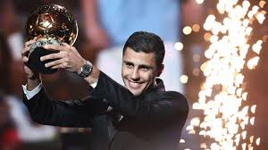

La cérémonie de 2024 a été marquée par l'absence du Real Madrid, qui a annulé sa venue à Paris suite à des rumeurs de fuites des résultats. Les spéculations sur une fuite ont été démenties par Vincent Garcia et Rodri, affirmant que personne n'était informé des résultats avant l'annonce officielle. Pour la première fois au 21eme siècle, un joueur de nationalité espagnole a donc remporté la plus prestigieuse des distinctions individuelles. Champion d’Europe avec la Roja, champion d’Angleterre avec Manchester City et auteur d’une saison épatante de régularité, Rodri a été sacré Ballon d’Or France Football.Alors que plusieurs médias laissaient entendre que le verdict avait été communiqué bien avant la cérémonie, il n’en serait rien. Le Real Madrid avait d’ailleurs tout programmé, une cinquantaine de représentants du club (joueurs, staff technique et dirigeant inclus) ayant planifié le déplacement en France. Mais c’est en se basant sur des rumeurs dans l’après-midi de lundi que le club espagnol aurait fait marche arrière. Certaines sources ont indiqué que Manchester City – et donc Rodri – étaient au courant. Des spéculations qui ne reflèteraient pas la réalité, comme l’a rappelé Vincent Garcia, le rédacteur en chef de France Football. « Personne n’était au courant, ni au Real, ni à City. L’émotion qu’avait Rodri sur scène, c’est la meilleure réponse. Il n’était pas au courant de quoi que ce soit. (Cette émotion) coupe court à toutes les supputations selon lesquelles on aurait pu avertir l’un ou l’autre », a expliqué le journaliste sur La Chaîne L’Equipe, tout en précisant que « tous les clubs des favorits ont insisté pour avoir l’information ». Le journaliste finlandais, lui, a été le seul juré européen à ne pas citer « Vini ». A la publication du détail des votes de la part de France Football, Juha Kanerva a alors été la cible de nombreux supporters des Merengues. Face à un tel déferlement de commentaires sur X, le journaliste a donné une raison absolument lunaire. « C’est une faute technique de ma part, dont j’assume la responsabilité. Je quitte ma place de juré du Ballon d’Or », a-t-il écrit en finnois puis en anglais sur le réseau social. La deuxième place de l’attaquant brésilien du Real Madrid, au Ballon d’or 2024, a du mal à passer dans son pays. Les commentateurs sportifs, comme les footballeurs et footballeuses, font part de leur incompréhension, et certains évoquent le sujet du racisme. De l’autre côté de l’Atlantique, la deuxième place du Brésilien Vinicius au Ballon d’or 2024 a viré au scandale. Longtemps donné favori du prix après une dernière saison exceptionnelle, l’attaquant vedette du Real Madrid s’est finalement incliné face à Rodri, milieu de terrain espagnol de Manchester City.